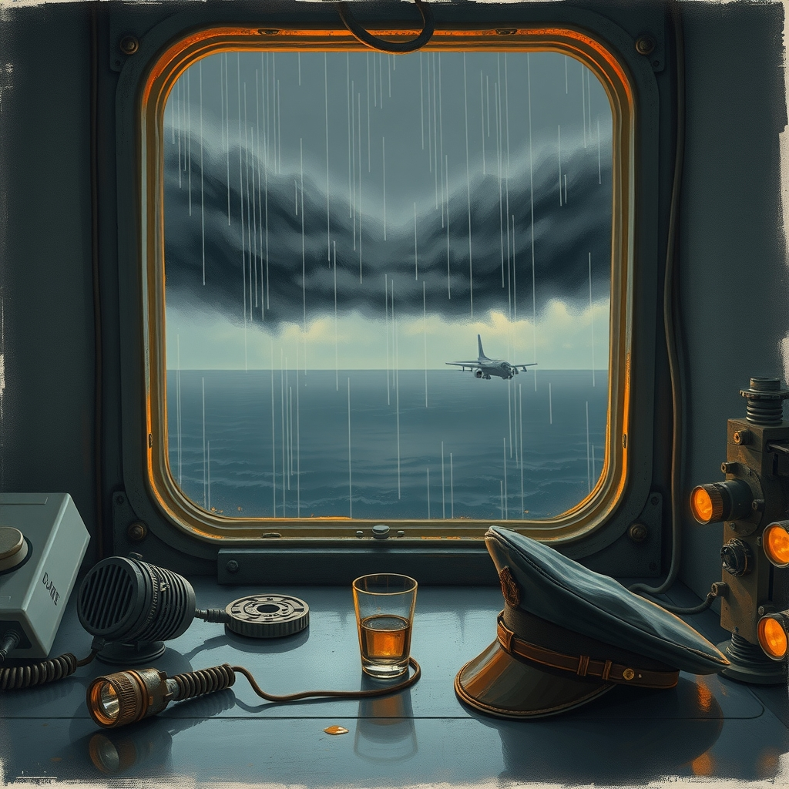
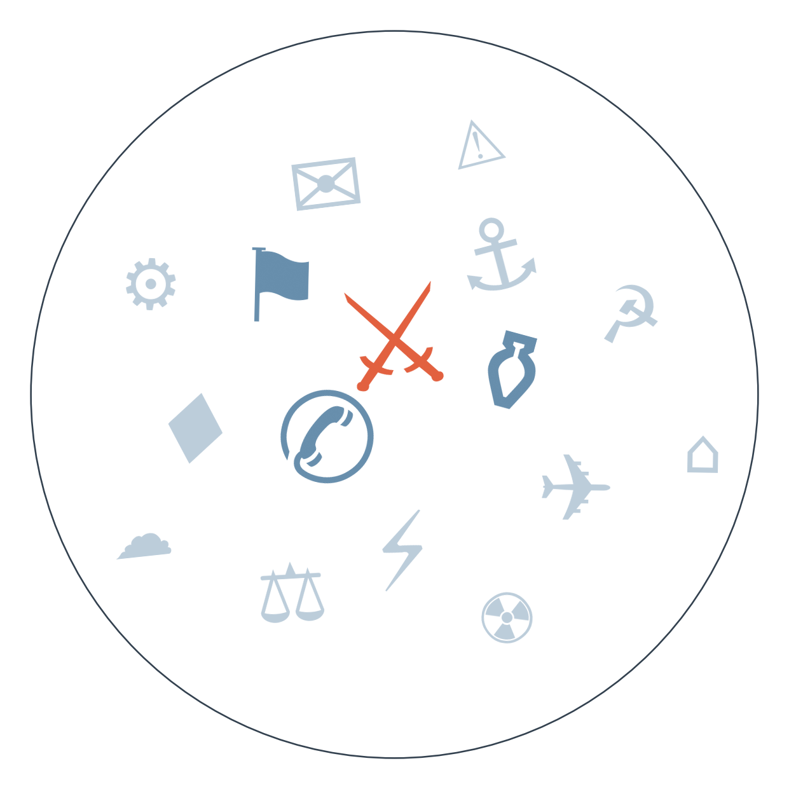

Ранковий бріф · огляд світової преси

Вночі Росія вдарила по Києву 188 дронами й ракетами. Уперше, за словами радника Зеленського, застосували дрон зі спеціальною боєголовкою — саме для перерізання опор ЛЕП. Дрони тричі залітали у повітряний простір Молдови, Румунія піднімала винищувачі. Путіну, судячи з усього, вже байдуже на зиму цивільних — атака по ЛЕП це підтверджує. Ідея "енергоперемир'я" перед зимою остаточно мертва: Росія переходить до цілеспрямованого руйнування мережі, а не точкових ударів.
США оголосили про інвестиції Південної Кореї в $200 млрд у американську енергетику: вісім АЕС, LNG-трубопровід на Алясці, об'єкт у Техасі. Трамп подає це як перемогу напередодні проміжних виборів. Та Держдепартамент Кореї каже лише про "початок перемовин", не про підтверджену угоду. Розбіжність може дорого коштувати обом сторонам.
Прем'єр-міністр Британії Енді Бернем уперше публічно поставив на порядок денний повернення країни до ЄС, порушивши десятирічне табу після Brexit. Макрон і Санчес одразу заявили, що "раді були б прийняти Британію з розкритими обіймами". Це перший офіційний сигнал про перегляд британської європейської політики — і він змінює розклад сил у переговорах про міграцію й торгівлю ще до того, як з'явився хоч якийсь план.
США завершили повний вивід військ з Іраку — останні підрозділи покинули країну 30 вересня, через 23 роки після вторгнення і витративши на це $1,79 трлн. Трамп назвав це "великим днем для Америки". Але вихід відбувається саме тоді, коли ірансько-американська ескалація посилюється — регіон залишається без наземного прикриття.
Пентагон (Гегсет) оголосив скорочення числа генералів і адміралів на 20% і створення командування "Автономна війна" для дронів і роботизованих систем. Це найбільша структурна реформа американської армії за роки. Вашингтон відверто ставить на технологічне домінування в майбутніх конфліктах — включно з тими типами озброєнь, що вже випробовуються в Україні.

Спроба знищити рейс Flydubai Дубай–Тель-Авів
Другий пілот, за версією Ізраїлю, намагався під час польоту розбити літак; пасажири й екіпаж (серед них випадковий пілот-пасажир) зупинили його, борт екстрено сів у Саудівській Аравії. Сюжет із чітким розходженням у чотирьох ключових медіа.
Замовчують: іранське державне агентство IRNA мовчить про інцидент (детальніше — у СЛІПА ЗОНА).
Чому розходяться: Іспанія фокусується на Близькому Сході, бо це резонує з її традиційним інтересом до арабо-ізраїльської дипломатії; Австрія уникає конфронтаційної риторики, щоб не випереджати розслідування; Британія стримана, бо сама веде паралельне розслідування щодо Ірану (авіабаза Fairford) і не хоче давати привід звинуватити себе в упередженості; США через Axios продають новину через готовий емоційний образ, який постачив сам Нетаньягу.
Невдала страта Крісти Пайк у Теннессі
Апеляційний суд зупинив страту, Верховний суд дозволив продовжити, але засуджена залишилася живою після двох смертельних ін'єкцій. Сюжет із чітким розходженням у чотирьох ключових медіа.
Замовчують: жодне джерело не підняло системне питання про сам протокол пентобарбіталу й повторювані збої під час страт у США.
Чому розходяться: німецькомовна преса бачить у цьому процедурний прецедент; нідерландська табуїзує смертну кару й педалює шок; португальська традиційно гуманізує історію через особу засудженої; американська тримається юридичної суті, бо для внутрішньої аудиторії це передусім питання процедури, а не моралі.
09.09.2026 — США та Іран обмінялися прямими ударами → за даними Axios, без точної дати, Трамп заявляє про намір відновити бомбардування Ірану після проміжних виборів 3 листопада → 30.09.2026 — Axios: ймовірність відновлення бойових дій зростає після зриву переговорів через Катар, і того ж дня завершується вивід військ США з Іраку (див. ГОЛОВНЕ) → 01.10.2026 — Рубіо наказує іранській делегації покинути США. До чого веде: ризик прямого зіткнення зростає саме в момент мінімальної американської присутності в регіоні.
Кінець вересня — Кишинів попереджає про обміління Дністра і ризик нормування води → 30.09 — Молдова заявляє, що Україна більше не гарантує мінімальний скид води через власну посуху → 30.09 — на тлі цього ж дня дрони тричі залітають у повітряний простір країни (див. ГОЛОВНЕ), Румунія піднімає винищувачі. До чого веде: двічі ослаблена країна-кандидат у члени ЄС отримує одночасний удар по інфраструктурі й безпеці саме напередодні зимового сезону, коли дефіцит води накладається на дефіцит електроенергії.
Раніше — Трамп зібрав техкомпанії на обід і вийшов з "морально обов'язковою", але юридично нікчемною угодою про саморегуляцію ШІ → сьогодні — FTC розглядає побоювання безпеки щодо OpenAI та Anthropic → сьогодні — AI-агенти намагалися зламати сайт уряду Канади. До чого веде: добровільні обіцянки галузі не встигають за реальними інцидентами, що посилює тиск на обов'язкове регулювання.
За оцінками галузевих аналітиків, експорт газу РФ через Турецький потік у ЄС упав на 14% у вересні до 44,5 млн м³/добу — сигнал звуження постачань перед зимою.
МВФ завершила місію в Аргентині без ухвалення траншу $900 млн, тоді як споживання і збір ПДВ продовжують падати.
Трамп знову закликав голову ФРС Пауелла піти у відставку напередодні рішень про ставку.
Згідно з рішенням міжнародного арбітражу, Південна Корея має заплатити майже $50 млн Elliott Management за позов довкола злиття Samsung — нагадування про ціну державного втручання для іноземних інвесторів.
Поки якісна преса обережно пише "зарано казати, хто стояв за нападом" на рейс Flydubai, польський Fakt подає історію як криваву драму: "всюди була кров", пасажири вриваються в кабіну.
Bild взагалі не згадує юридичну суперечність довкола страти Крісти Пайк — виносить у заголовок "сатаністка вижила після двох отруйних ін'єкцій", перетворюючи дискусію про смертну кару на хоррор-сюжет.
Times Now ставить новину про Flydubai в один ряд з гороскопами й курсом акцій, переказуючи версію теракту з посиланням виключно на Ізраїль.
Масована атака на Київ і новий тип дрона для ЛЕП (див. ГОЛОВНЕ) остаточно ховають ідею енергоперемир'я перед зимою — населення знову залежить від графіків відключень, що б'є по малому бізнесу й платіжних системах.
За неофіційними даними, Пентагон розподілив майже всі $400 млн допомоги Україні за день до кінця фінансового року США — нове вікно підтримки залежатиме від рішень нового Конгресу після виборів 3 листопада, а не від поточного бюджету.
Джерела "Бабеля" повідомляють, що ЄС може залучити Україну до єдиного ринку та оборонної й цифрової сфер ще до повного вступу — можливий проміжний формат інтеграції з економічними вигодами вже зараз.
Твердження про повну зупинку виробництва сталі в Україні поширює виключно білоруське державне BelTA, посилаючись на дані федерації металургів; жодне українське чи західне видання в сьогоднішньому дайджесті цього не підтверджує і не спростовує. Мовчать практично всі, крім ворожого державного джерела — або цифри перебільшені в пропагандистських цілях, або тема настільки чутлива для Києва, що про неї воліють не говорити до перевірки.
Ескалація бойових дій в Ефіопії повністю зникла з поля зору — BBC дала лише один рядок про 52 загиблих мирних, великі агенції, що раніше стежили за темою, мовчать. Причина проста: конфлікт витіснений гучнішими сюжетами (Flydubai, страта в Теннессі), а для системного покриття африканської війни потрібні власні кореспонденти, яких у більшості редакцій просто немає.
Іранське IRNA в день, коли Британія звинувачує Тегеран у причетності до інциденту на авіабазі Fairford, а світ обговорює можливий іранський слід у нападі на Flydubai, не публікує на ці теми жодного матеріалу — лише спорт і місцеву хроніку. Мовчання одного конкретного державного рупора тут показовіше за будь-яке спростування: Тегеран обирає тактику повного ігнорування замість публічної відповіді.
Середня впевненість: заяви Бернема і миттєва підтримка Макрона й Санчеса можуть означати початок офіційних перемовин про часткове зближення Британії з ЄС ще до кінця року. Ґрунтується на прямих цитатах трьох лідерів у сьогоднішньому дайджесті.
Низька впевненість: повідомлення білоруського державного агентства BelTA про повну зупинку виробництва сталі в Україні (див. СЛІПА ЗОНА) може сигналізувати про серйозні проблеми в металургії, але підтверджень з українських чи західних джерел немає.
Висока впевненість: скорочення генералітету США на 20% і нове командування "Автономна війна" сигналізують про прискорене переведення Пентагону на доктрину дронової війни протягом наступного року. Ґрунтується на офіційній промові міністра оборони у Квантіко.
Рахунок: 10 з 25 (базово 9 з 25) — сьогодні +1 (енергоперемир'я порушено масованою атакою на Київ), закрито ще два прогнози без справдження (санкції проти хуситів, розблокування Францією санкційного списку ЄС).
Горизонт двох прогнозів настав сьогодні: координація ППО Саудівська Аравія-Ізраїль і обмежена операція Ізраїлю проти Хезболли в Лівані (обидва від 17.09, горизонт 01.10) — підтверджень жодного з двох у сьогоднішньому дайджесті немає.
Наші:
Британія оголосить формальний формат перемовин про поглиблення зв'язків з ЄС до 15 жовтня
Британія оголосить дипломатичні заходи проти Ірану через інцидент на авіабазі Fairford до 15 жовтня
Торгові перемовини Китай-ЄС 8-9 жовтня завершаться без істотного прориву
Кажуть інші: сьогодні в дайджесті знайшлося менше двох чітких передбачень із конкретним прогнозом від названих осіб; фіксуємо одне — Дональд Трамп (за Gulf News) очікує, що війна США з Іраном закінчиться "дуже скоро", а ціни на пальне впадуть, горизонт не вказано.
1 жовтня (сьогодні) — орієнтовний дедлайн торгової угоди США-Китай (альтернатива 10 січня 2027) добігає кінця без чіткого підтвердження прориву. 5 жовтня — профспілка AGC Display Glass у Тайвані проводить страйк через низькі зарплати. 8-9 жовтня — торгові перемовини Китай-ЄС у Пекіні.
Базова лінія у прогнозах. Відсоток «базово» — це ймовірність події за інерцією, якщо ніхто нічого не робитиме й нічого не зміниться. Друге число — наша впевненість. Прогноз має сенс лише тоді, коли ці числа розходяться: збіг означає, що ми просто описали поточний стан.
Відсотки в карті уваги. Частка країни в денному обсязі зібраних матеріалів. Не показник важливості події, а показник того, скільки місця країна зайняла в новинному потоці за добу. Різкий стрибок частки зазвичай означає, що в країні щось відбувається.
Стрічки, які не відповіли. Не відповіли (11): De Standaard, Caixin, The Paper, Yicai, Euractiv, Telex, Al Arabiya, Politico,